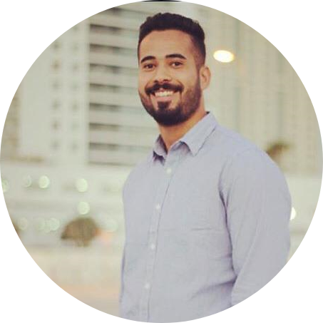

|  |
Yousef sadehStructural engineer at stantec graduated of ABET-accredited bachelor’s in civil engineering program,backed by successful Structural engineer experience with over 1 years' experience in structural design and building information modeling (BIM) in the UAE. And my current role involves structural design of buildings and preparing reports, structural analysis models, drawings and 3D BIM models,calculations for loads and stresses and selecting appropriate construction materials as well as providing technical advice |
Bachelor’s in civil engineering, Regional and national conferences participation and assist in various volunteer efforts. Practical approach to test and supervise different types of infrastructure, soil and roads. Design of residential and non-residential projects in addition to calculating the quantities of projects
| 2019-2020 |
Stantec international |
responsibilities:
sample rojects:
| my hobbies | contact |
| skill | |||
|---|---|---|---|
| paython | ❤❤❤❤❤ | Etabs | ❤❤❤❤❤ |
| html | ❤❤❤❤❤❤ | safe | ❤❤❤❤❤ |